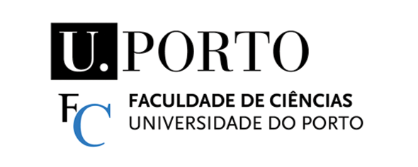
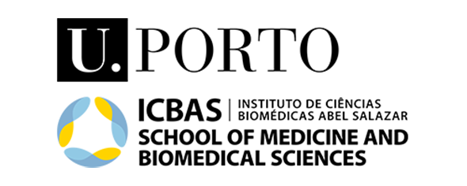
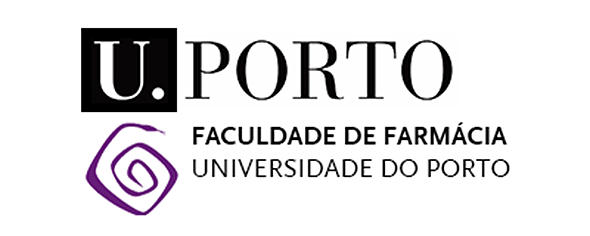

Welcome ! My name is Maria Santos and I'm currently in the last year of the bachelor's degree in Bioinformatics at the University of Porto, Portugal.
To present my work and interests to the world, I decided to create this portfolio! I hope you enjoy my work! :)
Here you can find all my projects, mostly developed during my free time, as a way to improve my skills in different areas!
I absolutely love genomics and the application of machine learning in the field of biomedicine! Proteins are also a big passion of mine, I love everything related to their study and functions. Data Science is also fascinating, even though statistics is not always my strong suit — but that's what makes it a challenge worth pursuing!
I also love molecular biology and immunology — it's an area where I intend to investigate and apply my knowledge too.
Final year of the Bachelor's Degree in Bioinformatics, at the Faculty of Sciences, Abel Salazar Biomedical Institute and Faculty of Pharmacy, University of Porto.



Throughout my academic journey, I have been deeply involved in student associations, developing strong skills in leadership, teamwork, event organization and communication, such as BEST Porto, Biomédicas Youth School, and NUBI, where I am one of the founders.
You can read all about my experiences in my LinkedIn Profile!